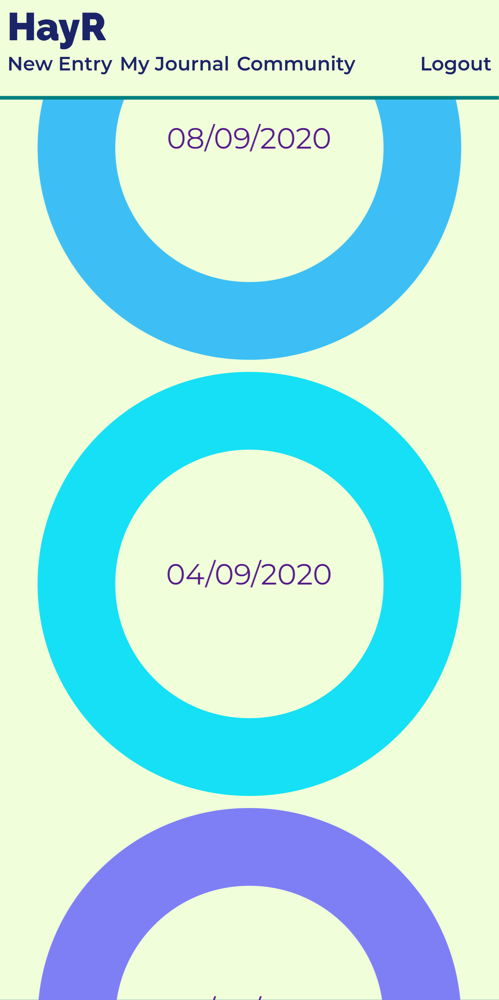
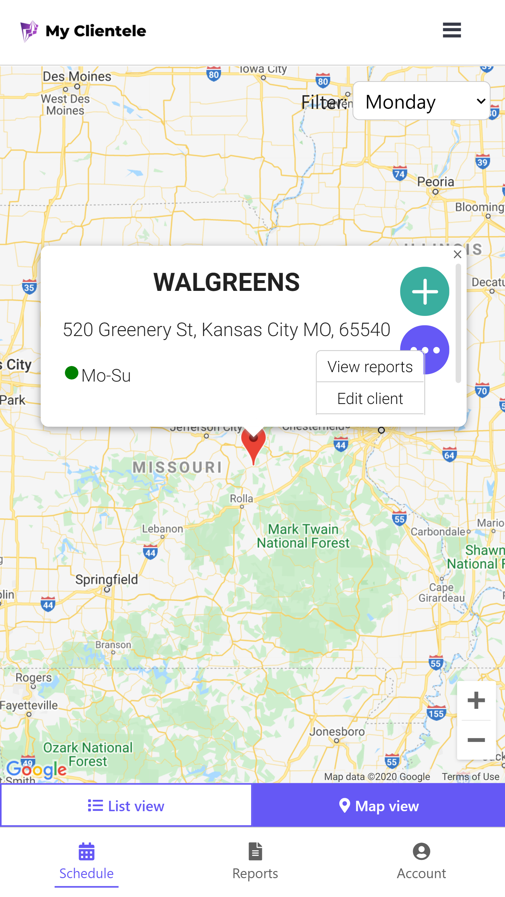
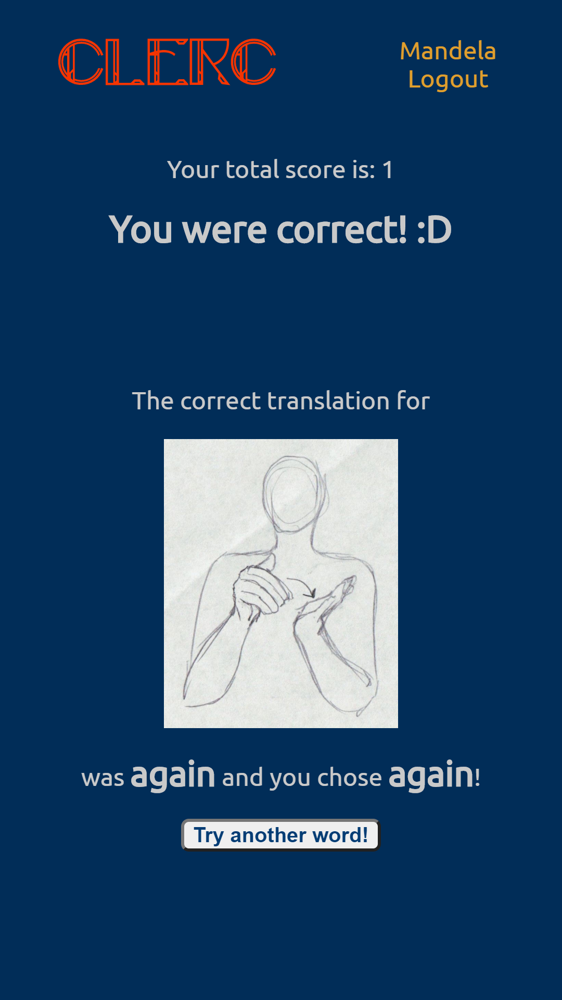

About Me
I am a web developer, music maven, and idea dispensary. I grew up watching Teal'c, Morpheus, and Major Kusanagi explore the final frontiers of space and the web. My background in natural resources and agriculture led me to explore different landscapes, thinking about additional software and hardware we need to be better explorers in life.
Remember all those moments where someone checked their device and pulled up some information that helped the team open the magic door and discover something new? I enjoy using my web development toolbelt with other developers to help businesses that do good interact better with the world and each other in the name of moving humanity forward.
Contact Me


Projects
HayR
HTML | CSS | JavaScript
PostgreSQL | Express | React | Node
HayR is an application for online journaling used by companies to create a safe space to share feelings and thoughts. As you become more comfortable with entering a few words about your day or a simple moment as a reflection, you always have the option to reveal them to others anonymously. By sharing a reflection with the HayR community, you are able to see how others are during that day. When we accept and appreciate all thoughts and feelings that exist, we are able to appreciate the vastness of the human experience like stars in the night sky.
MyClientele
HTML | CSS | JavaScript
PostgreSQL | Express | React | Node
MyClientele is an application that allows account managers and salespersons to access their daily schedule, clients, previous reports, and even take reports on the go, maximizing your daily productivity. My Clientele is ideal for the fast-paced and busy lifestyle you lead and allows you to keep up-to-date with what places are closed due to things like Covid-19 or renovations with the currently closed feature. With a click of a button, you can keep up to date with your clients and their needs, all from one easy to use app!
CLERC
HTML | CSS | JavaScript
PostgreSQL | Express | React | Node
CLERC is an application to help anyone learn American Sign Language (ASL) using the spaced repetition learning method. Named after Laurent Clerc, who more than half of ASL is attributed to, this app will teach you ten basic words to allow you to communicate with hearing-impaired people. Once you sign up and start practicing, as a user, you can see their score of right and wrong answers for each word.